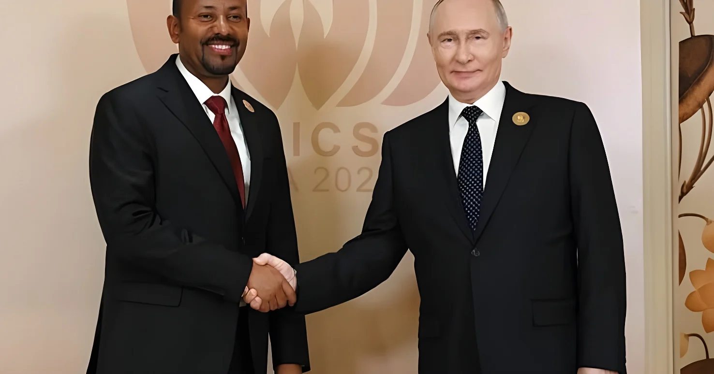

Le 6 octobre 2026, à Accra, le ministre ghanéen des Affaires étrangères a annoncé que le Cabinet du président John Dramani Mahama avait approuvé le dépôt d'une candidature du Ghana aux BRICS, en présence de son homologue indien. Accra met en avant la diversification de ses partenaires et la souveraineté sur ses ressources, tout en promettant de ne pas rompre avec ses bailleurs traditionnels. Aucune demande n'est encore confirmée comme remise : l'adhésion suppose le consensus des membres, et le pays s'expose au risque de représailles douanières américaines.
Le mardi 6 octobre 2026, le ministre ghanéen des Affaires étrangères, Samuel Okudzeto Ablakwa, a annoncé que le Cabinet du président John Dramani Mahama avait approuvé le dépôt d'une candidature officielle du pays aux BRICS. Il s'exprimait lors d'une conférence de presse commune à Accra avec son homologue indien, Subrahmanyam Jaishankar, en visite officielle. Il a présenté cette décision comme une première rendue publique ce jour-là.
Il faut distinguer l'annonce du dépôt lui-même. Selon l'agence officielle GNA, le gouvernement se prépare à soumettre sa demande et cherche d'abord l'appui des membres actuels ; selon Citi Newsroom, le ministre a affirmé que le Ghana « rejoindra » les BRICS. Aucune source consultée ne confirme à ce stade qu'une demande ait déjà été remise au groupe, et ni la date du dépôt ni le statut visé, membre à part entière ou pays partenaire, n'ont été précisés.
Le ministre avance trois raisons. La première est la diversification des partenaires : il assure que le Ghana « ne tournera pas le dos à ses partenaires traditionnels » et reste membre du FMI et de la Banque mondiale, mais voit dans les BRICS des options de financement et de coopération supplémentaires. La deuxième est le programme de « nouvelle économie » du gouvernement, bâti sur sept piliers dont la création d'emplois, l'investissement, l'industrialisation et une meilleure valorisation des ressources naturelles. La troisième est politique : échapper aux conditionnalités d'un petit nombre d'institutions et défendre un système international multipolaire. Le ministre a résumé : « Rejoindre l'Inde aux BRICS nous donnera des options économiques. »
Le groupe est né du sigle BRIC (Brésil, Russie, Inde, Chine), formalisé en 2006 puis réuni en sommet à Ekaterinbourg en 2009, avant l'entrée de l'Afrique du Sud en 2011. Il a connu un élargissement en janvier 2024 (Égypte, Éthiopie, Iran, Arabie saoudite, Émirats arabes unis) puis l'arrivée de l'Indonésie en janvier 2025, ce qui porte à onze le nombre de membres, même si Riyad n'a pas confirmé sa participation à tous les travaux. Une catégorie de pays partenaires, créée à Kazan en octobre 2024, compte aujourd'hui dix États. Les décisions d'admission se prennent par consensus et le groupe n'a publié aucun critère formel : aucun membre, y compris l'Inde, qui préside le groupe en 2026, ne peut offrir seul une adhésion.
Accra a déjà sollicité l'aide de New Delhi, qui a accueilli le 18e sommet des BRICS les 12 et 13 septembre. Jaishankar a salué les aspirations du Ghana sans s'engager : « Il s'agit évidemment d'une question d'examen collectif. Il faudra voir comment cela progresse. » La relation bilatérale est dynamique : selon Ablakwa, les échanges commerciaux sont passés d'environ 3 milliards de dollars en 2024 à environ 7 milliards, et deux protocoles d'accord, sur l'agriculture et sur la science et les technologies, ont été signés pendant la visite. Les deux pays évoquent aussi des coopérations dans les chemins de fer, la pharmacie, le numérique et la défense, et le ministre a rappelé l'amitié entre Kwame Nkrumah et Jawaharlal Nehru, pionniers du Mouvement des non-alignés.
Le Cabinet ghanéen approuve le dépôt d'une candidature aux BRICS ; annonce à Accra.
18e sommet des BRICS à New Delhi, sous présidence indienne.
Dernière revue du programme du FMI validée : environ 371 millions de dollars débloqués.
L'Indonésie devient membre ; Nigeria et Ouganda deviennent partenaires.
Entrée de l'Égypte, de l'Éthiopie, de l'Iran, de l'Arabie saoudite et des Émirats arabes unis.
L'Afrique du Sud rejoint le groupe, qui devient les BRICS.
La candidature intervient après un redressement spectaculaire. Le Ghana, qui avait fait défaut sur sa dette extérieure en 2022, a mené à son terme un programme du FMI de 3 milliards de dollars, dont la dernière revue a été validée le 27 juillet 2026. Il a repris le paiement de ses euro-obligations restructurées, avec 700 millions de dollars versés début juillet, et 2,1 milliards depuis janvier 2025. La croissance atteint 6,0 % au deuxième trimestre, l'inflation 5,0 % en août, et les exportations d'or ont bondi de 49 % au premier semestre, à 12,5 milliards de dollars, grâce au cours du métal jaune.
« Nous voulons une souveraineté sur nos ressources, où nous serons traités en partenaires égaux. »
— Samuel Okudzeto Ablakwa, ministre des Affaires étrangères du Ghana, 6 octobre 2026 (traduction)| Ghana en chiffres, 2026 | Valeur |
|---|---|
| Croissance, 2e trimestre | + 6,0 % |
| Inflation, août | 5,0 % |
| Taux directeur | 14 % |
| Exportations d'or, 1er semestre | 12,5 Md$ |
| Réserves de change (22 sept.) | 12,05 Md$ |
| Cedi depuis janvier | ≈ − 9,5 % |
Le tableau n'est pas sans ombres. Le cedi a perdu environ 9,5 % face au dollar depuis le début de l'année, à environ 11,72 pour un dollar le 5 octobre, après un net rebond en 2025. Les réserves de change, tombées à 11,07 milliards de dollars en août après un sommet de 14,16 milliards en mars, couvrent environ 4,5 mois d'importations. La dette publique, projetée par le FMI à 53 % du produit intérieur brut fin 2026, reste élevée, et l'État emprunte à 11 % pour payer les producteurs de cacao.
Le sujet le plus sensible est Washington. En juillet 2025, le président Donald Trump a menacé d'un droit de douane supplémentaire de 10 % les pays qui s'aligneraient sur les politiques « anti-américaines » des BRICS. Le commerce de biens entre les États-Unis et le Ghana a atteint environ 2,5 milliards de dollars en 2025, et l'accès au marché américain dépend notamment de l'AGOA, qui ouvre la voie en franchise à plus de 1 800 produits. Aucune réaction officielle américaine à la candidature n'a été relevée.
Des analystes rappellent qu'appartenir aux BRICS n'assure ni financement ni accès aux marchés, et que le défi du Ghana est de produire davantage, pas seulement d'échanger davantage. Le pays reste très dépendant de l'or et du cacao, deux matières premières dont il ne contrôle pas les prix. Le ministre souligne d'ailleurs qu'il n'est pas question de rompre avec les bailleurs traditionnels.
| Afrique et BRICS | Statut | Entrée |
|---|---|---|
| Nigeria | Partenaire | Janv. 2025 |
| Ouganda | Partenaire | Janv. 2025 |
| Égypte | Membre | Janv. 2024 |
| Éthiopie | Membre | Janv. 2024 |
| Afrique du Sud | Membre | 2011 |
En demandant à entrer aux BRICS tout en gardant le FMI, le Ghana ne cherche pas à changer de camp mais à élargir le nombre de ses options, une stratégie de non-alignement à l'ère des blocs. Le moment est calculé : sorti de la faillite, le pays négocie en position moins fragile et cherche des débouchés pour son or, son cacao et ses futures industries, auprès d'une Inde dont les échanges avec lui ont plus que doublé.
Mais cette liberté a un prix. Chaque pas vers le « Sud global » peut se payer en droits de douane américains, et le groupe lui-même est divisé, entre des puissances qui se méfient les unes des autres et des nouveaux entrants dont le statut reste flou. La candidature vaut donc moins par son issue, que le consensus rend incertaine, que par le signal envoyé : les pays africains moyens entendent désormais être courtisés par tous.